はじめる前に
- Facebookにログインできるパソコン（ビジネスの設定はパソコンが必要です）
- お店のInstagramにログインできるスマホ
- 広告費を払うカード（クレジット・デビット）
- Facebook・Instagramのパスワード
- カードの番号（画面共有中は、入れる間だけ共有を止めてください）
- スマホに届く確認の番号（認証コード）
- Facebookに久しぶりに入る方は、数日前に一度ログインしておいてください。何年も使っていないアカウントで、いきなり設定を続けて行うと、Facebookの安全確認で一時的に止められることがあります。
- Instagramアプリの「プロフィールを編集」の画面の写真を、LINEで送ってください。お店のInstagramが今どこにつながっているかを、先に確かめます（同じものを二重に作らないためです）。
- パソコンでもLINE（またはメール）を開けるようにしておいてください。当日お送りするURLやメールアドレスを、パソコンでそのまま押せます。
- Zoomの「共有」ボタンで、パソコンの画面を映せるか一度試してください。Zoomの操作バーが画面の上を隠すときは、バーをつかんで下へ動かせます。
そのままで大丈夫です。ビジネスポートフォリオ（手順2）だけ作っていただければ、ページと広告アカウントは、しっとるが用意します。
前の会社の管理画面にお店のInstagramや広告アカウントが入ったままだと、しっとるが設定するときに「アセットが割り当てられませんでした」「Instagramアカウントの既存の所有権を削除できませんでした」と出て止まります。先に次をご確認ください。
- Instagram・Facebookの広告や運用を、外部の会社に頼んだことがあるか（会社名と、今も契約中か）
- その会社と、今も連絡が取れるか
- パソコンで
business.facebook.com/latest/settings/instagram_accountを開き、お店のInstagramが出るか（画面の写真をLINEへ） - 出ないときは、前の会社に「御社の管理画面から、うちのInstagram（と広告アカウント）を外してください」とお願いする
前の会社の管理画面の中で作られた広告アカウントは、お店の側に移せません。そのときは、しっとるが新しく作ります。前の会社と連絡が取れないときは、LINEでご相談ください。
出てくる名前の違い（先にここだけ読めば迷いません）
Metaの画面には、似た名前の「アカウント」や「ページ」がいくつも出てきます。中身は次の6つだけです。人が1人、お店の箱が1つ、箱の中に持ち物が3つ、箱を使わせてもらう会社が1つ、と覚えてください。
① Facebookアカウント （個人アカウント・プロフィール）
ご本人のもの。ログインに使います。広告には出ません。
間違えやすい点：お店の名前では作れません。1人1つです。これが無いと、ほかは何も作れません。
② ビジネスポートフォリオ （前の名前：ビジネスマネージャ、ビジネスアカウント）
お店の③④⑤をまとめて入れる箱です。誰に使わせるかも、ここで決めます。
間違えやすい点：ログインするアカウントではありません。①の人が、中に入って操作します。1人が2つ以上の箱に入っていることがあるので、左上の名前で「いまどの箱か」を確かめます。
③ Facebookページ
お店の看板です。広告は、このページの名前で出ます。
間違えやすい点：①の個人アカウントとは別物です。ページ自体にはログインできません（①でログインして、ページに「切り替える」）。投稿はしなくて大丈夫です。
④ Instagramアカウント （画面では「Instagramプロフィール」とも出ます）
お店のInstagramです。プロアカウントにして、③のページにつなぎます。
間違えやすい点：ログインは、Instagramのユーザーネームとパスワード（①とは別）です。②の箱に入れただけでは、③につながりません。
⑤ 広告アカウント
広告と広告費が入る帳簿です。カードはここに登録します。
間違えやすい点：ログインするアカウントではありません。Instagramアプリの「投稿を宣伝」で自動でできた広告アカウントは、②の箱の外（個人のもの）にあることがあります。
⑥ パートナー
②の箱の中身を使ってよい、ほかの会社です（今回は株式会社しっとる）。
間違えやすい点：持ち主は変わりません。いつでも外せます。
- アセット：②の箱に入っている持ち物のことです。③Facebookページ・④Instagram・⑤広告アカウントなどを、Metaの画面ではまとめて「アセット」と呼びます。「アセットを割り当てる」は「この持ち物を使ってよいと決める」という意味です。
- ビジネス設定（
business.facebook.com/settings）：②の箱の中を見る画面です。左のメニューの「アカウント」は、箱に入っている持ち物の一覧（「ページ」＝③、「Instagramプロフィール」＝④、「広告アカウント」＝⑤）、「ユーザー」は、箱を使える人と会社の一覧（「ユーザー」＝人、「パートナー」＝⑥）です。たとえば「アカウント → ページ」は、「箱の中に、お店のFacebookページが入っているかを見る場所」という意味です。 - Metaビジネススイート・広告マネージャ：投稿や広告を作るための画面（道具）の名前です。新しいアカウントではありません。
- アカウントセンター：ご本人のFacebookとInstagramのログインをまとめる場所です。ここで「アカウントを追加」しても、③のページと④のInstagramはつながりません。今回の手順では使いません。
手順1Facebookの個人アカウントを用意する
お客様にお願いします- すでにFacebookにログインできる方は、新しく作らず、今のアカウントを使います。
- 持っていない方だけ、Facebookの「新しいアカウントを作成」から、ご本人の名前で作ります（お店の名前では作れません）。
- ログインのときにスマホに番号が届く設定（二段階認証）をしておくと安心です。
| Facebookアカウント（個人） | Facebookページ | |
|---|---|---|
| 何か | ご本人のもの。ログインに使う | お店の看板 |
| 数 | 1人1つ | アカウントを持つ人が作る。いくつでも作れる |
| 広告に出るか | 出ません | 広告の名義として出ます |
Facebookは1人1つの決まりです。新しく作ったアカウントは制限がかかりやすく、広告の設定で止まることがあるため、今お持ちのものを使ってください。
手順2ビジネスポートフォリオを用意する（あれば1つに決める・無ければ作る）
お客様にお願いします（Zoomで一緒に進められます）- パソコンで
business.facebook.com/settingsを開き、手順1のアカウントでログインします。 - 左上の名前を押します。次のどちらかになります。
- 一覧が出た：お店の名前のものがあれば、それを選びます（新しく作りません）。お店のものが無いときは、下の「ほかのものはあるが、お店のものが無いとき」を読んでから、一覧のいちばん下の「ビジネスポートフォリオを作成」で作ります。
- 一覧が出ない、または「ビジネスポートフォリオを作成」の画面になった：まだ1つも無い状態です。そのまま作成に進みます。
- 作成の画面で、次の3つを入れて「作成」を押します。
- ビジネスポートフォリオ名：会社名か屋号（記号は使えません）
- 名前：左の欄が「名」（下の名前）、右の欄が「姓」（名字）です
- ビジネスのメールアドレス：ふだん見ているメールアドレス
- 以降の手順はすべて、左上がお店の名前になっている状態で進めます。
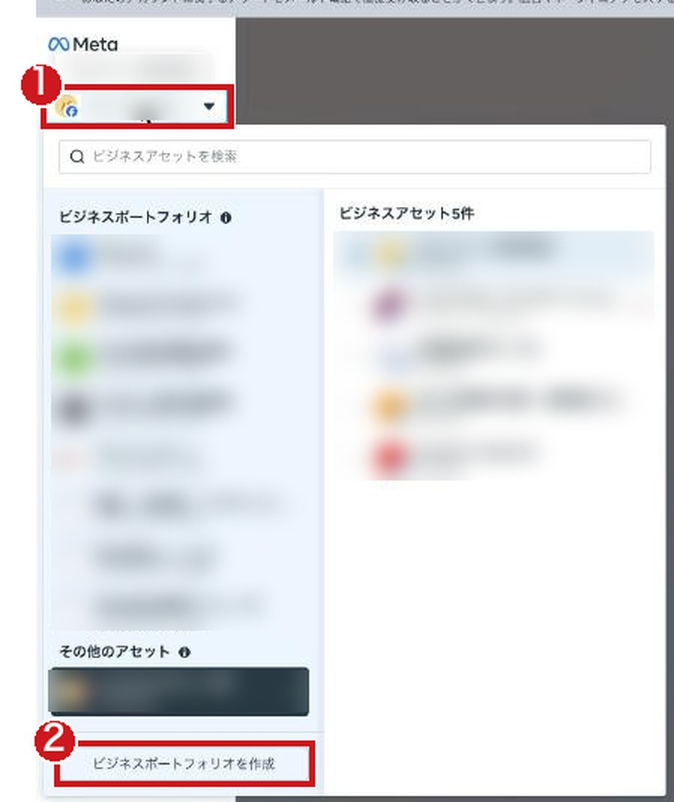
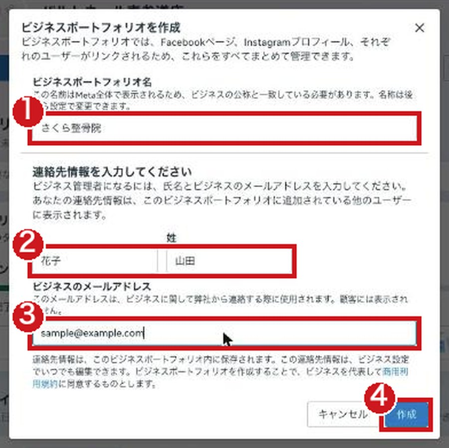
- すぐに新しく作りません。1人が作れるビジネスポートフォリオの数には上限があり、上限に達すると新しく作れなくなります。
- ページ・Instagram・広告アカウントが何もつながっていない空のものがあれば、それを使い、「ビジネス情報」で名前をお店の名前に変えます。
- 覚えのないものは、Instagramをプロアカウントにしたときに自動でできていることがあります。
- 本当に無いときは「ビジネスポートフォリオを作成」で作ります。名前は会社名か屋号にします（記号は使えません）。
入れた名前がMetaの決まりに合っていません。名前を変えて入れ直せば進めます。会社名か屋号を、文字だけでそのまま入れてください（例：株式会社さくら、さくら整骨院）。
- 記号を入れない（「・」「／」「＆」「！」「【】」「_」など）
- 英字を全部大文字にしない（SAKURA ではなく Sakura）
- 「整体」「サロン」「広告用」のような、お店を特定できない言葉だけにしない
- 「Facebook」「Instagram」「Meta」「インスタ」を入れない
- 地名や説明を足して長くしない
それでも通らないときは、「株式会社」を付ける・外す、カタカナと英字を入れ替える、を試します。3回続けてだめなら、少し時間をあけてから、入れた名前をLINEで送ってください。
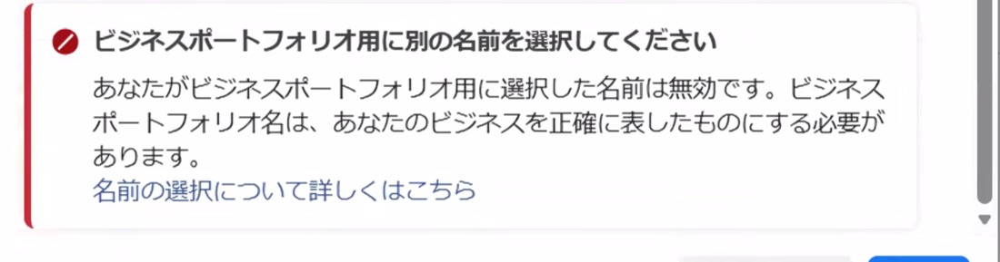
そのまま手順3へ進み、しっとるの担当を招待します。
手順3しっとるの担当を招待する
お客様にお願いします（5分ほど）手順2のビジネスポートフォリオに、しっとるの担当を「フルアクセス許可」で招待します。これで、ページ・広告アカウントの用意と、しっとるへの許可の設定を、しっとるで進められるようになります。持ち主はお店のままで、契約が終わったら同じ画面から担当を外せます。
- パソコンで
business.facebook.com/settingsを開き、左上がお店の名前になっているか確かめます。 - 左のメニューの「ユーザー」→「ユーザー」→ 右上の「ユーザーを招待」を押します。
- LINEでお送りするメールアドレスを入れて「次へ」。
- 「フルアクセス許可」の「すべて」にある「管理する」のスイッチをオンにして「次へ」。
- 「ビジネスアセットを割り当てる」の画面になります（アセット＝お店のページ・Instagram・広告アカウントのことです）。何も出てこない方（作ったばかりの方）は、そのまま「次へ」。お店のページなどが出てきた方は、お店のものにチェックを入れ、右の欄のいちばん下のフルアクセスをオンにしてから「次へ」。
- 確認の画面で、右下の「招待」のボタン（「アセット0件で招待」のように件数が入ります）を押せば完了です。
写真を押すと、大きく表示できます。
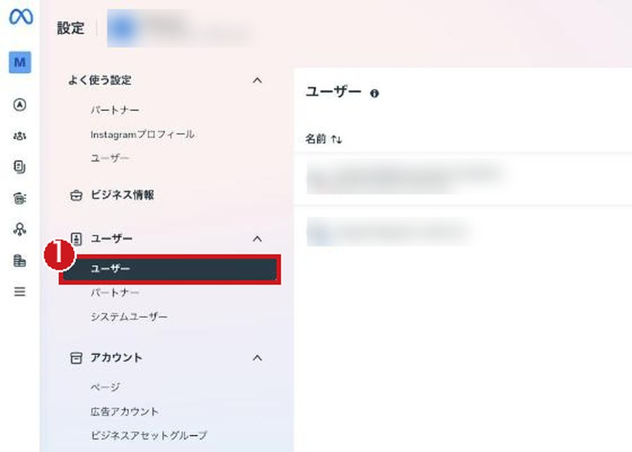
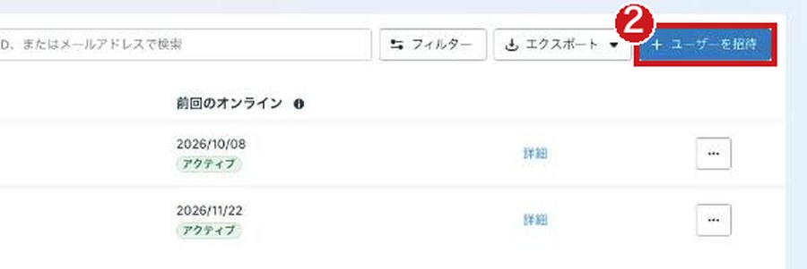
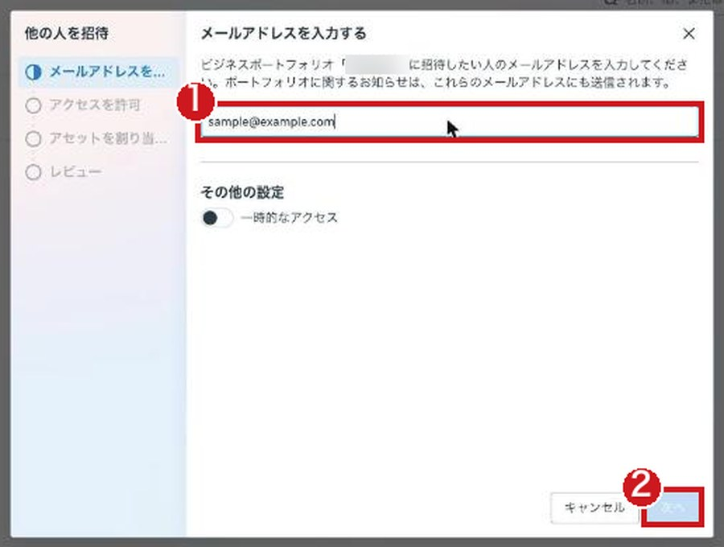
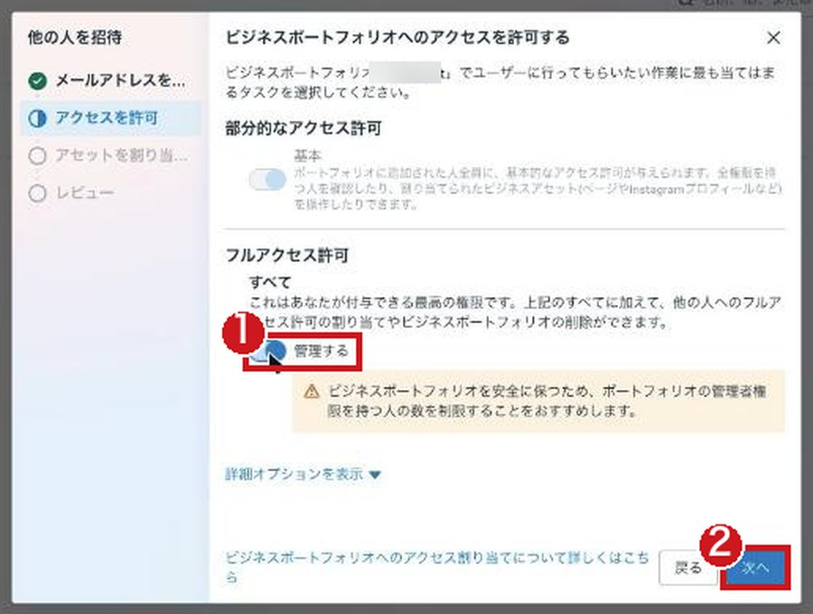
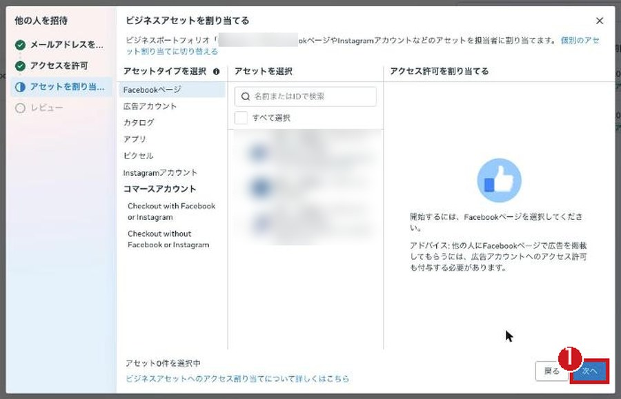
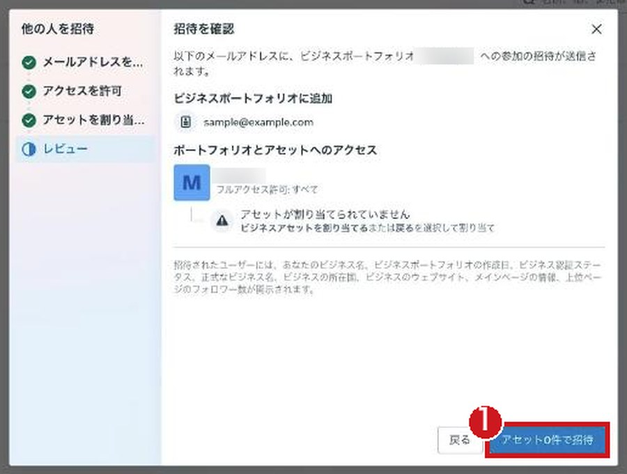
グループLINEで「担当を招待しました」と一言お送りください。ここで、いったんお休みです。
しっとるが行うこと（お客様の作業はありません）
株式会社しっとるが行います招待を受け取ったら、しっとるで次を進めます。お店のものはすべて、お店のビジネスポートフォリオの中に作ります。
- お店のFacebookページを確かめる。無ければ作る（お店の名前・住所・電話番号・ホームページを入れます）
- 広告アカウントを作る（時間帯は日本・通貨は日本円）
- 株式会社しっとるが広告を作れるように、許可の設定をする
準備が整ったら、LINEで「手順4〜6をお願いします」とお知らせします。お店によっては、すでにできている手順を飛ばしてご案内します。
手順4InstagramをFacebookページにつなぐ
お客様にお願いします（ご本人のログインが要ります。Zoomで一緒に進められます）しっとるがお店のFacebookページを用意したあとに行います。Instagramとページをつなぐ操作は、Metaの決まりで、お店の側でしか行えません。
- スマホのInstagramアプリで、お店のアカウントをプロアカウントにします（設定 →「アカウントの種類とツール」→「プロアカウントに切り替える」。無料で、投稿やフォロワーはそのままです）。すでにプロアカウントなら何もしません。
- パソコンでFacebookを開き、しっとるがLINEでお送りしたお店のページを開きます。ページの画面で「切り替える」を押すと、お店のページとして操作できる状態になります（下の写真①）。
- 「設定とプライバシー」→「設定」→「Instagram」→「アカウントをリンク」を押し、画面の案内どおり進めます。
- Instagramのユーザーネームとパスワードは、ご本人が入れます。
- 1つのページにつなげるInstagramは1つだけです。
- Facebookの「アカウントセンター」の「アカウントを追加」は、個人のアカウント同士をまとめる別の場所です。ここで追加しても、ページにはつながりません。
- ビジネス設定の「Instagramプロフィール」に追加しただけでも、ページにはつながりません。
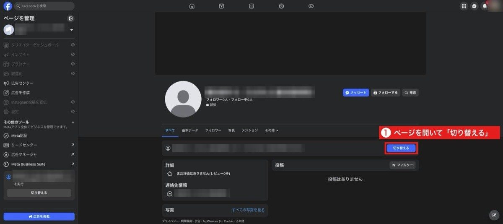
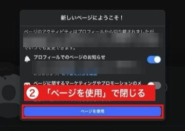
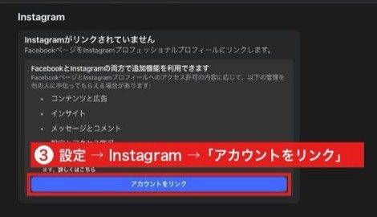
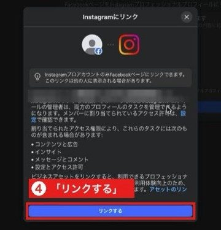
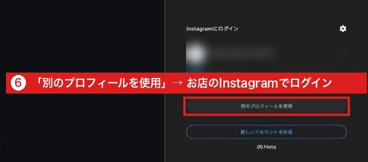
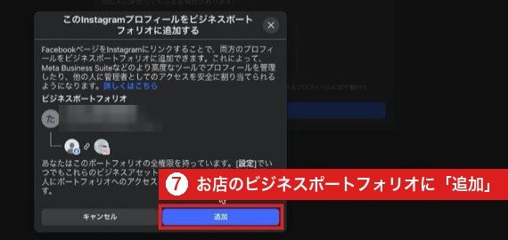
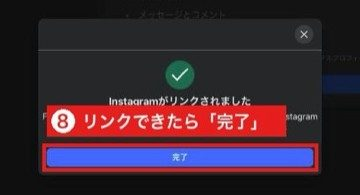
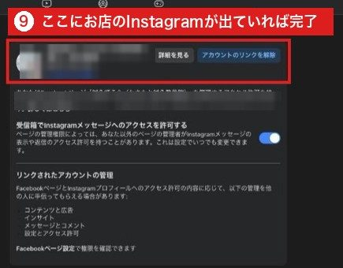
スマホのInstagramアプリで「プロフィールを編集」を開き、お店のページの名前が出ていれば、つながっています。ビジネス設定の「Instagramプロフィール」にも、お店のInstagramが出ます。
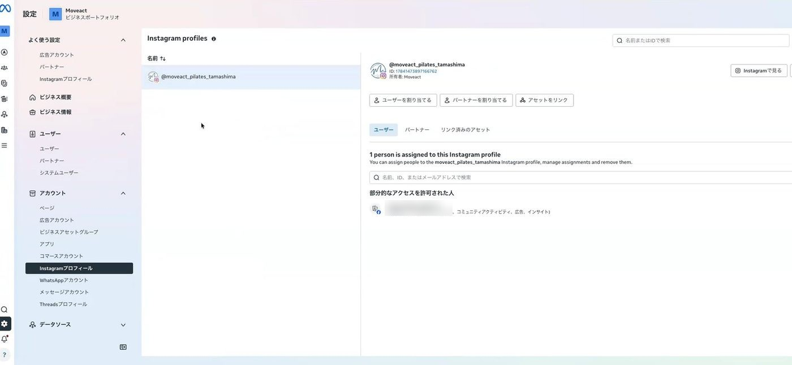
先にLINEでご相談ください。とくに、前の会社の管理画面に入っている場合は、ご自身で外さないでください。外してよいと分かったら、次の順で進めます。
- Instagramアプリの「プロフィールを編集」→「ページ」で、今つながっているページとのリンクを解除します。
- 入っているビジネスポートフォリオから、Instagramを外します（外し方は、しっとるからご案内します）。
- 上の手順で、お店のページにつなぎます。
外しても、Instagramの投稿やフォロワーは消えません。
止まった画面の写真をLINEでお送りください。しっとるでページの状態を確かめます。
お客様のFacebookアカウントに、お店のページの権限が入っていないときは、しっとるから全権限をお渡しします。Facebookに届く招待を「承認」していただいたら、Instagramアプリの「プロフィールを編集」→「ページ」から、お店のページを選びます。
「アカウントは制限されています」と出て止まるときは、何度も押さずにお知らせください。日時を合わせて、しっとるの担当の画面から一緒につなぐ方法をご案内することがあります。その場合は次のとおりです。
- 対面か、Zoomで担当の画面を操作していただく形で行います。
- Instagramのユーザーネームとパスワードは、担当の画面にご本人が入れます。LINEなどで送っていただく必要はありません。
- 確認コードがお客様のスマホやメールに届くことがあるので、お手元にご用意ください。
- 前もって、Instagramアプリの「設定」→「アカウントのステータス」に制限の表示が出ていないかをご確認ください。
- つないだあとは、担当の画面からInstagramをログアウトします。
お店のページがお客様のビジネスポートフォリオに入っている場合は、この方法は使えません。お店の側でつないでいただく形になりますので、画面の写真をもとにご案内します。
画面は実際のものです（お名前・ほかのお店の名前・金額はぼかしています）。
手順5Threadsのプロフィールを追加する
お客様にお願いします（ご本人のログインが要ります。5分ほど）広告は、Facebook・Instagramに加えてThreadsにも出します。Threadsに広告を出すには、お店のInstagramのThreadsのプロフィールと、それをビジネスポートフォリオに入れておくことが必要です。どちらもご本人のログインが要るため、お客様にお願いしています。
- スマホにThreadsアプリを入れ、お店のInstagramでログインして、プロフィールを作成します（すでにお店のThreadsがある方は、そのまま使います）。
- パソコンで
business.facebook.com/settingsを開き、左上がお店の名前になっているか確かめます。 - 左のメニューの「アカウント」→「Threadsプロフィール」→ 右上の「＋追加」を押し、出てきた画面の「Threadsプロフィールを追加」を押して、お店のThreadsでログインします。
- 「Threadsプロフィール」の一覧に、お店のThreadsが出ていれば完了です。
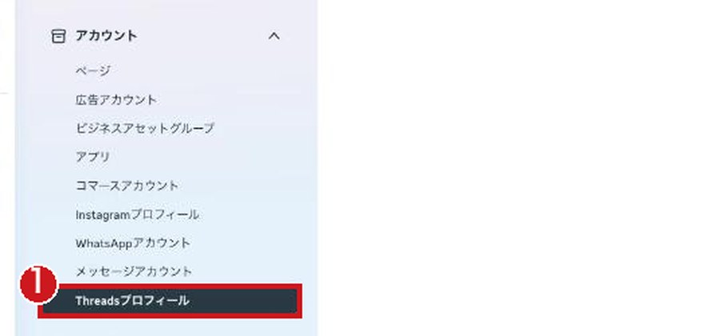
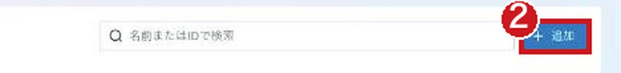
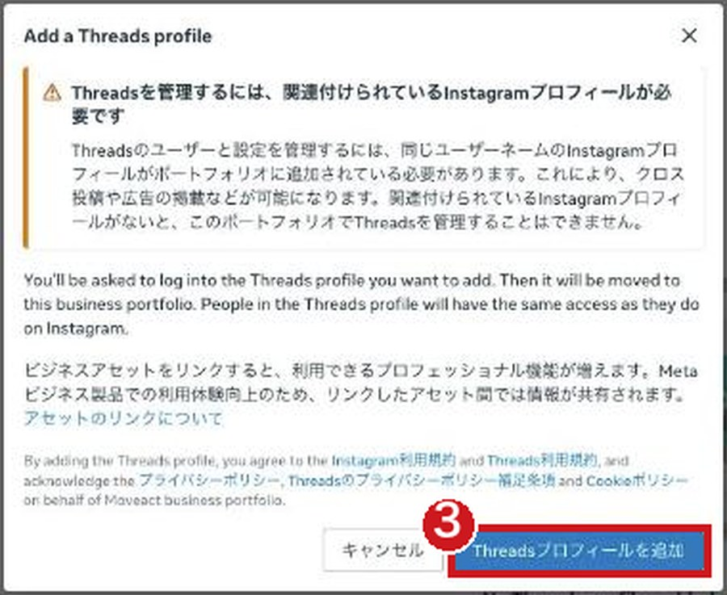
Threadsは、同じユーザーネームのInstagramがビジネスポートフォリオに入っていないと追加できません（上の写真③の画面にも出ます）。手順4でInstagramをつないだあとに行ってください。
Threadsのプロフィールを作っただけでは、広告の画面で「使用できるThreadsプロフィールがありません」と出て、Threadsには表示されません。3の「Threadsプロフィール」への追加まで行ってください。
手順6広告費のお支払い方法を登録する
お客様にお願いします（カードの登録はご本人にお願いします）しっとるが広告アカウントを作ったあとに行います。登録する画面のリンクは、LINEでお送りします。
- 左のメニューの下のほうの「請求と支払い」を押し、お店の広告アカウントを選びます。
- 「支払い方法を追加」→ カードを登録します。カード会社の本人確認が出たら、最後まで進めます。
- 「支払い方法」にカードが出て、広告アカウントが「有効」になれば完了です。
しっとるがお聞きしたり、代わりに入れたりすることはありません。Zoomで画面を共有しているときは、番号を入れる間だけ共有を止めて、入れ終わってから再開してください。広告費はこのカードからMetaへ直接お支払いいただきます。
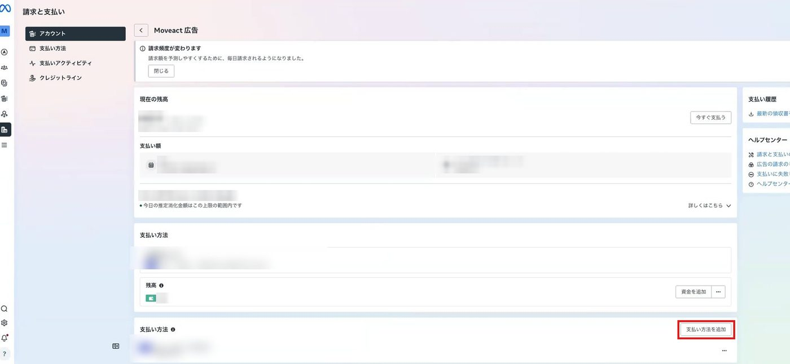
画面は実際のものです（お名前・ほかのお店の名前・金額はぼかしています）。
終わったら
お客様の作業は、ここまでです手順6のカードの登録が終わったら、グループLINEで「カードを登録しました」と一言お送りください。
- しっとるが広告を作れるように、許可の設定を確かめる
- 広告費のカードが「有効」になっているか確かめる
- ページ・Instagram・広告アカウントが正しくつながっているか点検する（ページとInstagramがつながっていないときは、つなぐ操作をお店の側でお願いします。手順はしっとるからご案内します）
- しっとるからInstagramに投稿できる状態か確かめる
- 広告がThreadsにも表示できるか確かめる
- 予約やお申し込みを数える仕組み（データセット）を確かめ、無ければ用意する
- 広告アカウントの名前を整える必要があるときは、ご了解をいただいてから直す
- Facebookの個人アカウントでログインできる
- 使うビジネスポートフォリオが1つに決まっている
- しっとるの担当を「フルアクセス許可」で招待した
- Instagramの「プロフィールを編集」に、お店のページの名前が出ている
- ビジネス設定の「Threadsプロフィール」に、お店のThreadsが出ている
- カードが登録され、広告アカウントが「有効」になっている
うまくいかないとき
| 出たこと | 考えられること | すること |
|---|---|---|
| 「アセットが割り当てられませんでした」「既存の所有権を削除できませんでした」 | 別の会社の管理画面に入ったまま。またはページ・Instagram・広告アカウントが別々のポートフォリオに入っている | 「以前ほかの会社に広告や運用を頼んでいた方へ」を確かめ、LINEでご連絡ください |
| 「ビジネスポートフォリオ用に別の名前を選択してください」 | 名前に記号・全部大文字の英字・一般的すぎる言葉などが入っている | 手順2の「別の名前を選択してください」と出たとき |
| 「アカウントが制限されました」「このビジネスポートフォリオを広告に利用することはできません」 | 久しぶりに使うFacebookアカウントで設定を続けて行ったため、安全確認で一時的に止められている | 「詳細を見る」→「審査をリクエスト」を押し、案内どおりにご本人が本人確認を進めます。身分証を出すときは、Zoomの画面共有を止めてください。スマホで同じ画面を開くと、写真をそのまま出せます。結果はメールで届きます。待っている間は、新しく作る操作を続けないでください（しっとるの担当を招待済みなら、こちらで進められる分を進めます）。 |
| 左上の一覧に、お店のビジネスポートフォリオが出ない | 別のFacebookアカウントで作られている。またはInstagramをプロアカウントにしたときに自動でできている | すぐに新しく作らず、Instagramアプリの「プロフィールを編集」の画面の写真をLINEへ。どこに入っているかを確かめてから進めます |
| 「使用できるThreadsプロフィールがありません」 | Threadsのプロフィールを作っただけで、ビジネスポートフォリオに追加していない | 手順5の3を行い、「Threadsプロフィール」の一覧にお店のThreadsが出るか確かめます |
| しっとるから「ページとInstagramがつながっていない」と連絡が来た | InstagramがFacebookページにリンクされていない。つなぐ操作は、お店の側でしかできません | 手順4のとおりに、お店のInstagramをページにつなぎます。Instagramアプリの「プロフィールを編集」にお店のページの名前が出れば完了です。つながっていない間も、写真の投稿はしっとるから代わりに行えますが、縦長の動画（リール）は、つないでからでないと、しっとるからは投稿できません。分からないときは、画面の写真をLINEへ。 |
| 手順4を何度試しても、同じ画面で止まってつながらない | ページの権限や、ページが入っている場所によって起きます | 止まった画面の写真をLINEへ。手順4の「何度試してもつながらないとき」のとおり、お店のページの権限をお渡しするか、しっとるの担当と一緒につなぐ方法をご案内します。 |
| Instagramを追加できない | 別のページやポートフォリオにつながったまま | 手順4の「Instagramが別のページやポートフォリオにつながっていたとき」 |
| カードが登録できない | 本人確認が終わっていない。ネット決済や海外利用が止められている | カード会社に確認。続けて失敗したら24〜48時間あけて再度 |
| 本人確認・コードを求められた | Metaの安全確認 | 画面の案内どおりに、ご本人が進める |
| 名前やボタンが違う | Metaの画面の言葉は、ときどき変わります | 押す前に画面の写真をLINEへ。押す場所を文字でお返しします |
しっとるが、お客様の代わりにログインしたり、パスワードやカード番号をお聞きしたりすることはありません。